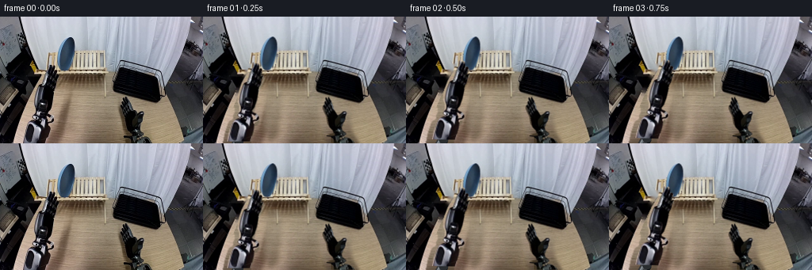
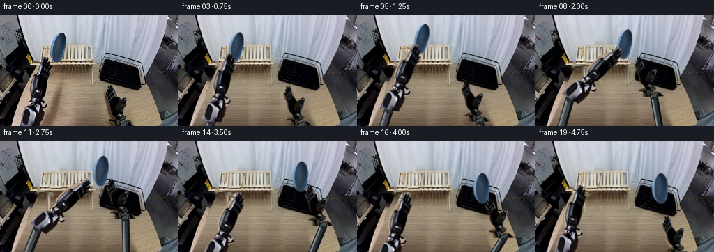
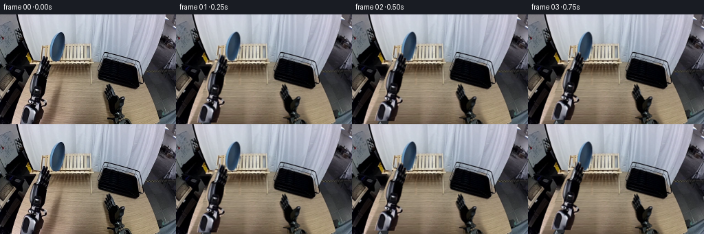
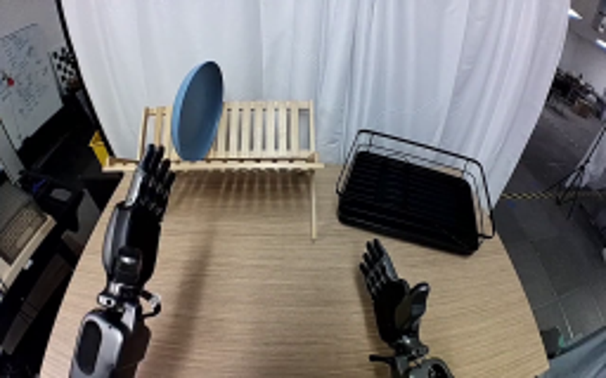
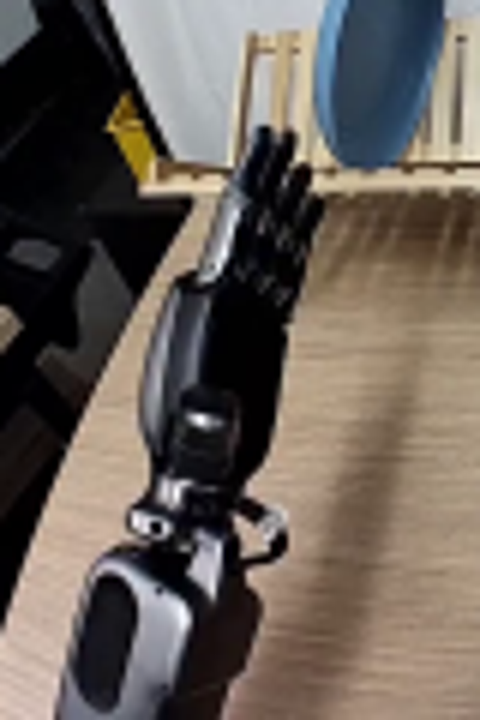
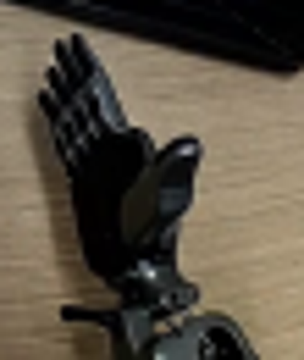
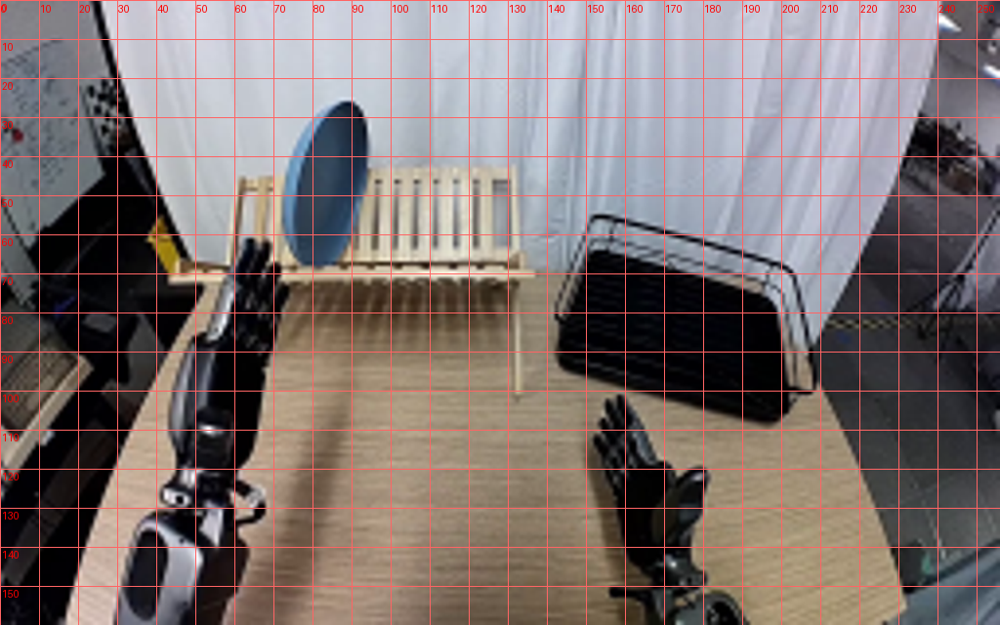
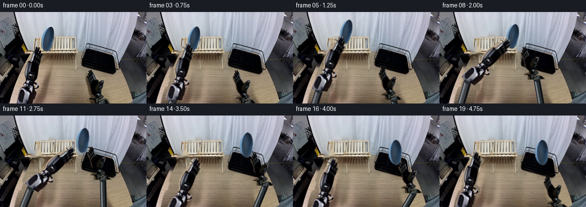
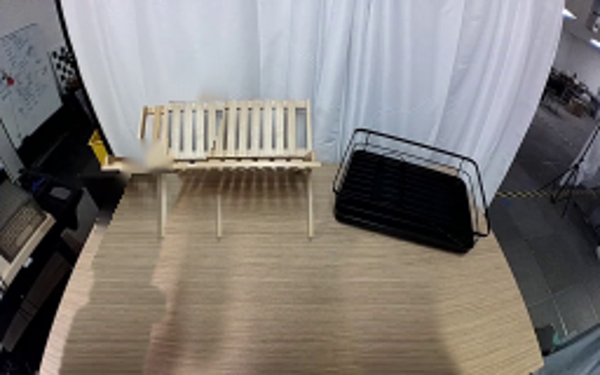
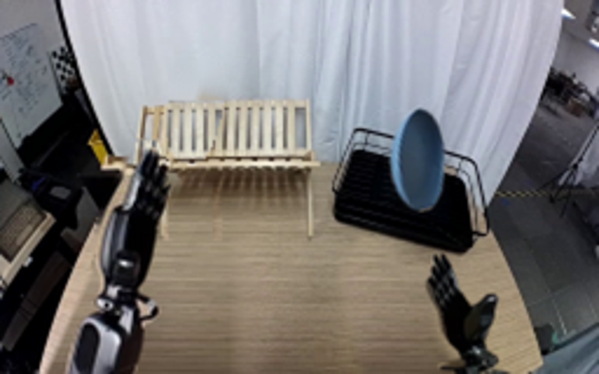

CODING AGENTS AS PIXEL WORLD MODELS
traex/GPT-6.1-Sol · common50_0035
点击播放 · 原生 RGB 像素
逐轮保存的候选
回放视频、检查图与代码变化。
每份候选均可单独播放。实际图片检查记录在下方工具轨迹中。
候选 01播放与检查图
点击播放 · 原生 RGB 像素


展开代码变化
--- 上一保存版本
+++ 本次保存版本
@@ -0,0 +1,189 @@
+from pathlib import Path
+import math
+import cv2
+import numpy as np
+from PIL import Image, ImageDraw, ImageFilter
+import artifact_io
+
+ROOT=Path(__file__).resolve().parent
+W,H=256,160
+S=4
+src=np.array(Image.open(ROOT/'first_frame.png').convert('RGB'))
+
+def polyalpha(points, blur=.22):
+ a=Image.new('L',(W*S,H*S));d=ImageDraw.Draw(a)
+ d.polygon([(round(x*S),round(y*S)) for x,y in points],fill=255)
+ if blur:a=a.filter(ImageFilter.GaussianBlur(blur*S))
+ return np.array(a.resize((W,H),Image.Resampling.LANCZOS)).astype(np.float32)/255
+
+leftpts=[(28,160),(30,149),(33,140),(35,135),(39,132),(42,130),(41,126),(43,122),(43,115),(41,110),(41,103),(43,95),(46,86),(50,78),(53,73),(55,66),(59,61),(61,60),(63,61),(63,64),(65,60),(67,61),(68,64),(68,69),(70,67),(72,69),(72,72),(70,78),(73,76),(74,79),(73,82),(70,88),(68,91),(67,98),(65,108),(62,117),(59,121),(60,123),(65,125),(68,128),(68,132),(65,135),(62,136),(61,145),(57,160)]
+rightpts=[(162,160),(162,154),(162,152),(155,151),(155,149),(165,147),(164,144),(160,140),(157,135),(156,127),(153,121),(151,116),(151,113),(153,112),(153,109),(154,108),(154,105),(154,103),(155,102),(156,102),(158,106),(158,102),(159,102),(162,107),(164,113),(165,117),(168,122),(170,125),(174,123),(177,120),(180,120),(182,121),(182,124),(180,129),(178,134),(175,140),(176,144),(180,146),(181,149),(178,152),(183,153),(187,155),(191,158),(193,160)]
+platepts=[(86.0,26.0),(89.0,26.0),(91.1,27.5),(93.0,31.0),(93.8,35.5),(93.9,41.0),(92.9,48.3),(90.8,56.0),(88.5,62.4),(85.0,67.3),(82.0,69.0),(79.0,68.5),(76.0,66.0),(74.0,61.9),(72.8,57.0),(72.5,51.0),(73.5,44.0),(76.0,37.0),(79.0,31.7),(82.7,27.6)]
+la=polyalpha(leftpts);ra=polyalpha(rightpts);pa=polyalpha(platepts,.13)
+
+# Reconstruct only the regions revealed by the moving foreground from nearby
+# curtain and wood grain in the same still image.
+def clean_scene():
+ bg=src.astype(np.float32).copy()
+ rm=((la+ra+pa)>.06).astype(np.uint8)*255
+ # Local non-learning fill for the curtain and little black surround.
+ inp=cv2.inpaint(src, cv2.dilate(rm,np.ones((3,3),np.uint8)),3,cv2.INPAINT_TELEA)
+ bg[:]=inp
+ yy,xx=np.mgrid[:H,:W]
+ # Table spans a trapezoid; sample the matching scanline of unoccluded grain.
+ edge=53-(yy-80)*.46
+ table=(yy>=74)&(xx>=edge)&(xx<225+(yy-140)*.15)
+ lm=cv2.GaussianBlur(cv2.dilate((la>.025).astype(np.uint8),np.ones((5,5),np.uint8)).astype(np.float32),(0,0),.65)*table
+ for y in range(74,H):
+ for x in range(W):
+ if lm[y,x]>0:
+ sx=int(110+(x-25)*.50)
+ sx=min(141,max(109,sx))
+ val=src[y,sx].astype(float)
+ # Slightly reduced illumination at the far-left edge.
+ val*=.97+min(1,max(0,(x-35)/40))*.015
+ bg[y,x]=bg[y,x]*(1-lm[y,x])+val*lm[y,x]
+ # Original right-hand shadow plus silhouette, replaced with adjacent grain.
+ rr=polyalpha([(148,106),(156,99),(166,104),(171,116),(184,117),(187,144),(197,160),(156,160),(150,140),(146,117)],2)
+ rr=np.maximum(rr,cv2.dilate(ra,np.ones((3,3),np.uint8)))
+ for y in range(99,H):
+ for x in range(143,202):
+ a=rr[y,x]
+ if a:
+ sx=110+int((x-145)*.50)
+ bg[y,x]=bg[y,x]*(1-a)+src[y,sx]*a
+ # Remove the soft shadow of the plate on the table while leaving stand legs.
+ shade=polyalpha([(82,82),(93,82),(99,100),(94,152),(83,157),(77,139),(78,109)],3)
+ for y in range(83,H):
+ for x in range(70,105):
+ a=shade[y,x]*.9
+ bg[y,x]=bg[y,x]*(1-a)+src[y,min(140,x+39)]*a
+ # Plate is in front of the wooden slots. Copy complete neighboring slots,
+ # including their curtain openings, at the stand's real spacing.
+ region=cv2.dilate((pa>.025).astype(np.uint8),np.ones((3,3),np.uint8))
+ for y in range(43,71):
+ for x in range(70,96):
+ if region[y,x]:
+ sx=x+34
+ sy=max(42,min(70,y-1))
+ bg[y,x]=src[sy,sx]
+ return np.clip(bg,0,255).astype(np.uint8)
+background=clean_scene()
+
+# Photographic rigid parts are transformed as one piece. They articulate at
+# their wrist/base without any elastic deformation of the gripper.
+def transform(anchor,target,angle=0,scale=1):
+ a=math.radians(angle);c=math.cos(a)*scale;s=math.sin(a)*scale
+ m=np.array([[c,-s,0],[s,c,0]],np.float32)
+ m[:,2]=np.array(target)-m[:,:2]@np.array(anchor)
+ return m
+
+def overlay(img,alpha,m):
+ # Premultiplied alpha prevents fringes of the original background.
+ outa=cv2.warpAffine(alpha,m,(W*S,H*S),flags=cv2.INTER_LINEAR)
+ prem=cv2.warpAffine(src.astype(np.float32)*alpha[...,None],m,(W*S,H*S),flags=cv2.INTER_LINEAR)
+ return img*(1-outa[...,None])+prem
+
+def highm(m):
+ return m*S
+
+rng=np.random.default_rng(21)
+noise=rng.normal(0,.8,(H*S,W*S,1))
+
+def cylinder(draw,a,b,width,color=(53,57,61),silver=True):
+ a=np.array(a,float)*S;b=np.array(b,float)*S
+ v=b-a;l=np.linalg.norm(v)
+ if l<1:return
+ n=np.array([-v[1],v[0]])/l
+ def ribbon(offset,ww,fill):
+ q=[a+n*(offset-ww/2),b+n*(offset-ww/2),b+n*(offset+ww/2),a+n*(offset+ww/2)]
+ draw.polygon([tuple(p) for p in q],fill=fill)
+ ribbon(0,width*S,(23,26,29))
+ ribbon(-.6*S,(width-1.8)*S,color)
+ ribbon(-width*.24*S,width*.22*S,(104,111,117) if silver else (48,53,56))
+ ribbon(-width*.31*S,.6*S,(155,161,165) if silver else (82,88,91))
+ ribbon(width*.32*S,width*.15*S,(12,16,19))
+
+def extension(base,end,side,img):
+ # The proximal pivot stays outside the fixed camera image. A rigid link
+ # connects the visible photographic housing to that pivot.
+ layer=Image.new('RGBA',(W*S,H*S));d=ImageDraw.Draw(layer)
+ if side=='left':
+ cylinder(d,base,end,13,(64,66,69),True)
+ ex,ey=end;d.ellipse(((ex-6)*S,(ey-6)*S,(ex+6)*S,(ey+6)*S),fill=(42,45,48,255))
+ else:
+ cylinder(d,base,end,11,(43,48,51),True)
+ ex,ey=end;d.ellipse(((ex-5)*S,(ey-5)*S,(ex+5)*S,(ey+5)*S),fill=(32,36,40,255))
+ ar=np.array(layer).astype(float);a=ar[...,3:]/255
+ return img*(1-a)+ar[...,:3]*a
+
+def shadow(img,center,size,strength):
+ yy,xx=np.mgrid[:H*S,:W*S];cx,cy=center;rx,ry=size
+ a=strength*np.exp(-(((xx/S-cx)/rx)**2+((yy/S-cy)/ry)**2)*1.5)
+ return img*(1-a[...,None])
+
+# key positions: approach, left pickup, joint grasp, right transfer, rack set-down.
+poses=[
+# plate x/y, plate angle, left contact, left rotation, right contact, right rot
+(83,47,0,(67,70),0,(155,105),0),
+(83,47,0,(70,68),0,(155,105),0),
+(83,47,0,(74,66),1,(155,105),0),
+(83,47,0,(76,65),2,(155,105),0),
+(85,40,0,(78,58),5,(155,104),0),
+(93,35,1,(86,53),10,(154,99),0),
+(104,36,2,(96,53),17,(153,89),0),
+(116,39,0,(107,55),25,(151,76),0),
+(128,43,-2,(118,58),32,(146,64),-2),
+(137,46,-4,(126,60),37,(149,60),-2),
+(140,46,-5,(129,60),38,(152,60),-2),
+(145,44,-7,(125,66),34,(157,58),-1),
+(154,45,-9,(113,75),25,(166,59),0),
+(165,48,-11,(101,81),18,(176,63),0),
+(175,52,-13,(89,85),10,(186,68),0),
+(179,59,-15,(80,87),7,(189,75),0),
+(179,65,-16,(73,85),3,(189,81),0),
+(179,65,-16,(70,81),1,(192,89),-2),
+(179,65,-16,(68,76),0,(193,101),-3),
+(179,65,-16,(67,73),0,(186,108),-2),
+]
+
+# Keep rack front wire in front of the plate's lower edge after insertion.
+rack_front=polyalpha([(145,89),(158,93),(180,99),(200,103),(201,105),(180,101),(157,96),(144,92)],.1)
+
+frames=[]
+for i,(px,py,pang,lt,laang,rt,raang) in enumerate(poses):
+ if i==0:
+ frames.append(src.copy());continue
+ im=np.array(Image.fromarray(background).resize((W*S,H*S),Image.Resampling.BICUBIC)).astype(float)
+ ml=transform((67,70),lt,laang)
+ mr=transform((155,105),rt,raang)
+ # Contact shadows sit on the table, not on the distant curtain.
+ lw=ml@np.array([51,124,1]);rw=mr@np.array([170,147,1])
+ im=shadow(im,(lw[0]+8,max(86,lw[1]+9)),(13,20),.11)
+ im=shadow(im,(rw[0]-7,max(95,rw[1]+9)),(12,17),.13)
+ if i>=4:
+ im=shadow(im,(px+2,max(83,py+36)),(10,7),.12 if i<14 else .18)
+ lend=ml@np.array([42,159,1]);rend=mr@np.array([177,159,1])
+ im=extension((31,184),lend,'left',im)
+ im=extension((182,185),rend,'right',im)
+ # plate disc is a single rigid photographic surface, with a slight planar
+ # perspective change as the wrists turn toward the rack.
+ scale=.99 if i>=12 else 1
+ pmat=transform((83.1,47.3),(px,py),pang,scale)
+ # Broaden face naturally during the handoff (rotation out of edge-on pose).
+ fac=1+(.18*min(1,max(0,(i-5)/9)))
+ pmat[:,:2]=pmat[:,:2]@np.diag([fac,1])
+ pmat[:,2]=np.array([px,py])-pmat[:,:2]@np.array([83.1,47.3])
+ im=overlay(im,pa,highm(pmat))
+ # Both grippers overlap their corresponding plate rim during the handoff.
+ im=overlay(im,la,highm(ml))
+ im=overlay(im,ra,highm(mr))
+ if i>=16:
+ af=cv2.resize(rack_front,(W*S,H*S),interpolation=cv2.INTER_LINEAR)[...,None]
+ original=cv2.resize(src.astype(float),(W*S,H*S),interpolation=cv2.INTER_CUBIC)
+ im=im*(1-af)+original*af
+ out=Image.fromarray(np.uint8(np.clip(im,0,255))).resize((W,H),Image.Resampling.LANCZOS)
+ frames.append(np.array(out))
+frames=np.stack(frames).astype(np.uint8)
+artifact_io.save(frames,ROOT)
+Image.fromarray(background).save(ROOT/'.tmp/background.png')
候选 02播放与检查图
点击播放 · 原生 RGB 像素


展开代码变化
--- 上一保存版本
+++ 本次保存版本
@@ -52,12 +52,27 @@
if a:
sx=110+int((x-145)*.50)
bg[y,x]=bg[y,x]*(1-a)+src[y,sx]*a
- # Remove the soft shadow of the plate on the table while leaving stand legs.
- shade=polyalpha([(82,82),(93,82),(99,100),(94,152),(83,157),(77,139),(78,109)],3)
- for y in range(83,H):
- for x in range(70,105):
- a=shade[y,x]*.9
- bg[y,x]=bg[y,x]*(1-a)+src[y,min(140,x+39)]*a
+ # A continuous strip of same-image wood removes the broad arm and dish
+ # shadows. Feathering into the untouched tabletop avoids cloned seams.
+ for y in range(76,H):
+ for x in range(14,111):
+ ed=53-(y-80)*.46
+ if x<ed+1:continue
+ # Preserve the stand's thin structural legs near the back edge.
+ if y<103 and ((66<x<72) or (90<x<95) or (130<x<135)):continue
+ vertical=min(1,max(0,(y-76)/7))
+ right=min(1,max(0,(111-x)/14))
+ boundary=min(1,max(0,(x-ed-1)/3))
+ amount=vertical*right*boundary
+ sx=108+int((x-ed)*.29)%32
+ val=src[y,sx].astype(float)
+ val*=.985+.012*min(1,max(0,(x-25)/75))
+ bg[y,x]=bg[y,x]*(1-amount)+val*amount
+ # Recover the stand's small left slots behind the original fingertips.
+ for y in range(53,71):
+ for x in range(58,73):
+ if rm[y,x]:
+ bg[y,x]=src[y,x+51]
# Plate is in front of the wooden slots. Copy complete neighboring slots,
# including their curtain openings, at the stand's real spacing.
region=cv2.dilate((pa>.025).astype(np.uint8),np.ones((3,3),np.uint8))
@@ -141,10 +156,10 @@
(165,48,-11,(101,81),18,(176,63),0),
(175,52,-13,(89,85),10,(186,68),0),
(179,59,-15,(80,87),7,(189,75),0),
-(179,65,-16,(73,85),3,(189,81),0),
-(179,65,-16,(70,81),1,(192,89),-2),
-(179,65,-16,(68,76),0,(193,101),-3),
-(179,65,-16,(67,73),0,(186,108),-2),
+(179,69,-16,(73,85),3,(189,85),0),
+(179,69,-16,(70,81),1,(192,94),-2),
+(179,69,-16,(68,76),0,(193,106),-3),
+(179,69,-16,(67,73),0,(186,112),-2),
]
# Keep rack front wire in front of the plate's lower edge after insertion.
可观测工具轨迹
实际执行的命令与返回图片。
命令 1exit 0
/bin/bash -lc "ls -la && cat prompt.txt && printf '\\n---RULES---\\n' && cat GENERATION_RULES.md"
命令 2exit 0
/bin/bash -lc "cat task_spec.json && cat artifact_io.py && python - <<'PY'
from PIL import Image
im=Image.open('first_frame.png'); print(im.size); im.resize((1024,640)).save('.tmp/first_large.png')
PY"命令 3exit 0
/bin/bash -lc "python - <<'PY'
import importlib.util
for m in ['cv2','scipy']:
print(m,bool(importlib.util.find_spec(m)))
from PIL import Image
im=Image.open('first_frame.png'); im.crop((20,40,100,160)).resize((480,720)).save('.tmp/left.png');im.crop((145,95,200,160)).resize((440,520)).save('.tmp/right.png')
PY"命令 4exit 0
/bin/bash -lc "python - <<'PY'
from PIL import Image
im=Image.open('first_frame.png')
im.crop((65,20,100,74)).resize((350,540)).save('.tmp/plate.png')
PY"命令 5exit 0
/bin/bash -lc "python - <<'PY'
from PIL import Image, ImageDraw
im=Image.open('first_frame.png').resize((1024,640));d=ImageDraw.Draw(im)
for x in range(0,256,10):
d.line((x*4,0,x*4,640), fill=(255,100,100),width=1);d.text((x*4+1,3),str(x),fill='red')
for y in range(0,160,10):
d.line((0,y*4,1024,y*4),fill=(255,100,100),width=1);d.text((2,y*4+2),str(y),fill='red')
im.save('.tmp/grid.png')
PY"命令 6exit 0
/bin/bash -lc "cat > generate.py <<'PY'
from pathlib import Path
import math
import cv2
import numpy as np
from PIL import Image, ImageDraw, ImageFilter
import artifact_io
ROOT=Path(__file__).resolve().parent
W,H=256,160
S=4
src=np.array(Image.open(ROOT/'first_frame.png').convert('RGB'))
def polyalpha(points, blur=.22):
a=Image.new('L',(W*S,H*S));d=ImageDraw.Draw(a)
d.polygon([(round(x*S),round(y*S)) for x,y in points],fill=255)
if blur:a=a.filter(ImageFilter.GaussianBlur(blur*S))
return np.array(a.resize((W,H),Image.Resampling.LANCZOS)).astype(np.float32)/255
leftpts=[(28,160),(30,149),(33,140),(35,135),(39,132),(42,130),(41,126),(43,122),(43,115),(41,110),(41,103),(43,95),(46,86),(50,78),(53,73),(55,66),(59,61),(61,60),(63,61),(63,64),(65,60),(67,61),(68,64),(68,69),(70,67),(72,69),(72,72),(70,78),(73,76),(74,79),(73,82),(70,88),(68,91),(67,98),(65,108),(62,117),(59,121),(60,123),(65,125),(68,128),(68,132),(65,135),(62,136),(61,145),(57,160)]
rightpts=[(162,160),(162,154),(162,152),(155,151),(155,149),(165,147),(164,144),(160,140),(157,135),(156,127),(153,121),(151,116),(151,113),(153,112),(153,109),(154,108),(154,105),(154,103),(155,102),(156,102),(158,106),(158,102),(159,102),(162,107),(164,113),(165,117),(168,122),(170,125),(174,123),(177,120),(180,120),(182,121),(182,124),(180,129),(178,134),(175,140),(176,144),(180,146),(181,149),(178,152),(183,153),(187,155),(191,158),(193,160)]
platepts=[(86.0,26.0),(89.0,26.0),(91.1,27.5),(93.0,31.0),(93.8,35.5),(93.9,41.0),(92.9,48.3),(90.8,56.0),(88.5,62.4),(85.0,67.3),(82.0,69.0),(79.0,68.5),(76.0,66.0),(74.0,61.9),(72.8,57.0),(72.5,51.0),(73.5,44.0),(76.0,37.0),(79.0,31.7),(82.7,27.6)]
la=polyalpha(leftpts);ra=polyalpha(rightpts);pa=polyalpha(platepts,.13)
# Reconstruct only the regions revealed by the moving foreground from nearby
# curtain and wood grain in the same still image.
def clean_scene():
bg=src.astype(np.float32).copy()
rm=((la+ra+pa)>.06).astype(np.uint8)*255
# Local non-learning fill for the curtain and little black surround.
inp=cv2.inpaint(src, cv2.dilate(rm,np.ones((3,3),np.uint8)),3,cv2.INPAINT_TELEA)
bg[:]=inp
yy,xx=np.mgrid[:H,:W]
# Table spans a trapezoid; sample the matching scanline of unoccluded grain.
edge=53-(yy-80)*.46
table=(yy>=74)&(xx>=edge)&(xx<225+(yy-140)*.15)
lm=cv2.GaussianBlur(cv2.dilate((la>.025).astype(np.uint8),np.ones((5,5),np.uint8)).astype(np.float32),(0,0),.65)*table
for y in range(74,H):
for x in range(W):
if lm[y,x]>0:
sx=int(110+(x-25)*.50)
sx=min(141,max(109,sx))
val=src[y,sx].astype(float)
# Slightly reduced illumination at the far-left edge.
val*=.97+min(1,max(0,(x-35)/40))*.015
bg[y,x]=bg[y,x]*(1-lm[y,x])+val*lm[y,x]
# Original right-hand shadow plus silhouette, replaced with adjacent grain.
rr=polyalpha([(148,106),(156,99),(166,104),(171,116),(184,117),(187,144),(197,160),(156,160),(150,140),(146,117)],2)
rr=np.maximum(rr,cv2.dilate(ra,np.ones((3,3),np.uint8)))
for y in range(99,H):
for x in range(143,202):
a=rr[y,x]
if a:
sx=110+int((x-145)*.50)
bg[y,x]=bg[y,x]*(1-a)+src[y,sx]*a
# Remove the soft shadow of the plate on the table while leaving stand legs.
shade=polyalpha([(82,82),(93,82),(99,100),(94,152),(83,157),(77,139),(78,109)],3)
for y in range(83,H):
for x in range(70,105):
a=shade[y,x]*.9
bg[y,x]=bg[y,x]*(1-a)+src[y,min(140,x+39)]*a
# Plate is in front of the wooden slots. Copy complete neighboring slots,
# including their curtain openings, at the stand's real spacing.
region=cv2.dilate((pa>.025).astype(np.uint8),np.ones((3,3),np.uint8))
for y in range(43,71):
for x in range(70,96):
if region[y,x]:
sx=x+34
sy=max(42,min(70,y-1))
bg[y,x]=src[sy,sx]
return np.clip(bg,0,255).astype(np.uint8)
background=clean_scene()
# Photographic rigid parts are transformed as one piece. They articulate at
# their wrist/base without any elastic deformation of the gripper.
def transform(anchor,target,angle=0,scale=1):
a=math.radians(angle);c=math.cos(a)*scale;s=math.sin(a)*scale
m=np.array([[c,-s,0],[s,c,0]],np.float32)
m[:,2]=np.array(target)-m[:,:2]@np.array(anchor)
return m
def overlay(img,alpha,m):
# Premultiplied alpha prevents fringes of the original background.
outa=cv2.warpAffine(alpha,m,(W*S,H*S),flags=cv2.INTER_LINEAR)
prem=cv2.warpAffine(src.astype(np.float32)*alpha[...,None],m,(W*S,H*S),flags=cv2.INTER_LINEAR)
return img*(1-outa[...,None])+prem
def highm(m):
return m*S
rng=np.random.default_rng(21)
noise=rng.normal(0,.8,(H*S,W*S,1))
def cylinder(draw,a,b,width,color=(53,57,61),silver=True):
a=np.array(a,float)*S;b=np.array(b,float)*S
v=b-a;l=np.linalg.norm(v)
if l<1:return
n=np.array([-v[1],v[0]])/l
def ribbon(offset,ww,fill):
q=[a+n*(offset-ww/2),b+n*(offset-ww/2),b+n*(offset+ww/2),a+n*(offset+ww/2)]
draw.polygon([tuple(p) for p in q],fill=fill)
ribbon(0,width*S,(23,26,29))
ribbon(-.6*S,(width-1.8)*S,color)
ribbon(-width*.24*S,width*.22*S,(104,111,117) if silver else (48,53,56))
ribbon(-width*.31*S,.6*S,(155,161,165) if silver else (82,88,91))
ribbon(width*.32*S,width*.15*S,(12,16,19))
def extension(base,end,side,img):
# The proximal pivot stays outside the fixed camera image. A rigid link
# connects the visible photographic housing to that pivot.
layer=Image.new('RGBA',(W*S,H*S));d=ImageDraw.Draw(layer)
if side=='left':
cylinder(d,base,end,13,(64,66,69),True)
ex,ey=end;d.ellipse(((ex-6)*S,(ey-6)*S,(ex+6)*S,(ey+6)*S),fill=(42,45,48,255))
else:
cylinder(d,base,end,11,(43,48,51),True)
ex,ey=end;d.ellipse(((ex-5)*S,(ey-5)*S,(ex+5)*S,(ey+5)*S),fill=(32,36,40,255))
ar=np.array(layer).astype(float);a=ar[...,3:]/255
return img*(1-a)+ar[...,:3]*a
def shadow(img,center,size,strength):
yy,xx=np.mgrid[:H*S,:W*S];cx,cy=center;rx,ry=size
a=strength*np.exp(-(((xx/S-cx)/rx)**2+((yy/S-cy)/ry)**2)*1.5)
return img*(1-a[...,None])
# key positions: approach, left pickup, joint grasp, right transfer, rack set-down.
poses=[
# plate x/y, plate angle, left contact, left rotation, right contact, right rot
(83,47,0,(67,70),0,(155,105),0),
(83,47,0,(70,68),0,(155,105),0),
(83,47,0,(74,66),1,(155,105),0),
(83,47,0,(76,65),2,(155,105),0),
(85,40,0,(78,58),5,(155,104),0),
(93,35,1,(86,53),10,(154,99),0),
(104,36,2,(96,53),17,(153,89),0),
(116,39,0,(107,55),25,(151,76),0),
(128,43,-2,(118,58),32,(146,64),-2),
(137,46,-4,(126,60),37,(149,60),-2),
(140,46,-5,(129,60),38,(152,60),-2),
(145,44,-7,(125,66),34,(157,58),-1),
(154,45,-9,(113,75),25,(166,59),0),
(165,48,-11,(101,81),18,(176,63),0),
(175,52,-13,(89,85),10,(186,68),0),
(179,59,-15,(80,87),7,(189,75),0),
(179,65,-16,(73,85),3,(189,81),0),
(179,65,-16,(70,81),1,(192,89),-2),
(179,65,-16,(68,76),0,(193,101),-3),
(179,65,-16,(67,73),0,(186,108),-2),
]
# Keep rack front wire in front of the plate's lower edge after insertion.
rack_front=polyalpha([(145,89),(158,93),(180,99),(200,103),(201,105),(180,101),(157,96),(144,92)],.1)
frames=[]
for i,(px,py,pang,lt,laang,rt,raang) in enumerate(poses):
if i==0:
frames.append(src.copy());continue
im=np.array(Image.fromarray(background).resize((W*S,H*S),Image.Resampling.BICUBIC)).astype(float)
ml=transform((67,70),lt,laang)
mr=transform((155,105),rt,raang)
# Contact shadows sit on the table, not on the distant curtain.
lw=ml@np.array([51,124,1]);rw=mr@np.array([170,147,1])
im=shadow(im,(lw[0]+8,max(86,lw[1]+9)),(13,20),.11)
im=shadow(im,(rw[0]-7,max(95,rw[1]+9)),(12,17),.13)
if i>=4:
im=shadow(im,(px+2,max(83,py+36)),(10,7),.12 if i<14 else .18)
lend=ml@np.array([42,159,1]);rend=mr@np.array([177,159,1])
im=extension((31,184),lend,'left',im)
im=extension((182,185),rend,'right',im)
# plate disc is a single rigid photographic surface, with a slight planar
# perspective change as the wrists turn toward the rack.
scale=.99 if i>=12 else 1
pmat=transform((83.1,47.3),(px,py),pang,scale)
# Broaden face naturally during the handoff (rotation out of edge-on pose).
fac=1+(.18*min(1,max(0,(i-5)/9)))
pmat[:,:2]=pmat[:,:2]@np.diag([fac,1])
pmat[:,2]=np.array([px,py])-pmat[:,:2]@np.array([83.1,47.3])
im=overlay(im,pa,highm(pmat))
# Both grippers overlap their corresponding plate rim during the handoff.
im=overlay(im,la,highm(ml))
im=overlay(im,ra,highm(mr))
if i>=16:
af=cv2.resize(rack_front,(W*S,H*S),interpolation=cv2.INTER_LINEAR)[...,None]
original=cv2.resize(src.astype(float),(W*S,H*S),interpolation=cv2.INTER_CUBIC)
im=im*(1-af)+original*af
out=Image.fromarray(np.uint8(np.clip(im,0,255))).resize((W,H),Image.Resampling.LANCZOS)
frames.append(np.array(out))
frames=np.stack(frames).astype(np.uint8)
artifact_io.save(frames,ROOT)
Image.fromarray(background).save(ROOT/'.tmp/background.png')
PY
python generate.py"命令 7exit 0
/bin/bash -lc "python - <<'PY'
from PIL import Image
im=Image.open('.tmp/background.png');im.resize((1024,640)).save('.tmp/bg_large.png')
PY"命令 8exit 0
/bin/bash -lc "python - <<'PY'
p='generate.py'
s=open(p).read()
start=s.index(' # Remove the soft shadow')
end=s.index(' # Plate is in front',start)
s=s[:start]+''' # A continuous strip of same-image wood removes the broad arm and dish
# shadows. Feathering into the untouched tabletop avoids cloned seams.
for y in range(76,H):
for x in range(14,111):
ed=53-(y-80)*.46
if x<ed+1:continue
# Preserve the stand's thin structural legs near the back edge.
if y<103 and ((66<x<72) or (90<x<95) or (130<x<135)):continue
vertical=min(1,max(0,(y-76)/7))
right=min(1,max(0,(111-x)/14))
boundary=min(1,max(0,(x-ed-1)/3))
amount=vertical*right*boundary
sx=108+int((x-ed)*.29)%32
val=src[y,sx].astype(float)
val*=.985+.012*min(1,max(0,(x-25)/75))
bg[y,x]=bg[y,x]*(1-amount)+val*amount
# Recover the stand's small left slots behind the original fingertips.
for y in range(53,71):
for x in range(58,73):
if rm[y,x]:
bg[y,x]=src[y,x+51]
''' +s[end:]
s=s.replace('(179,65,-16,(73,85),3,(189,81),0)', '(179,69,-16,(73,85),3,(189,85),0)')
s=s.replace('(179,65,-16,(70,81),1,(192,89),-2)', '(179,69,-16,(70,81),1,(192,94),-2)')
s=s.replace('(179,65,-16,(68,76),0,(193,101),-3)', '(179,69,-16,(68,76),0,(193,106),-3)')
s=s.replace('(179,65,-16,(67,73),0,(186,108),-2)', '(179,69,-16,(67,73),0,(186,112),-2)')
open(p,'w').write(s)
PY
python generate.py
python - <<'PY'
from PIL import Image
import numpy as np
from pathlib import Path
frames=list(Path('frames').glob('*.png'))
print('frame count:',len(frames))
print('first pixel identical:',np.array_equal(np.array(Image.open('frames/00.png')),np.array(Image.open('first_frame.png'))))
print('all RGB and resolution:',all(Image.open(p).mode=='RGB' and Image.open(p).size==(256,160) for p in frames))
Image.open('frames/19.png').resize((1024,640)).save('.tmp/final_large.png')
PY"命令 9exit 2
/bin/bash -lc 'if command -v ffmpeg >/dev/null; then ffmpeg -hide_banner -loglevel error -y -framerate 4 -i frames/%02d.png -frames:v 20 -c:v libx264 -crf 16 -pix_fmt yuv420p -movflags +faststart video.mp4; fi; ls -lh pixels.npz index.html video.mp4 2>/dev/null'
视觉工具实际返回图片 1

视觉工具实际返回图片 2

视觉工具实际返回图片 3

视觉工具实际返回图片 4

视觉工具实际返回图片 5

视觉工具实际返回图片 6
视觉工具实际返回图片 7

视觉工具实际返回图片 8

视觉工具实际返回图片 9

保存候选 2 份；完成命令 9 次；可验证图片返回 9 张。原始 API 响应与完整日志保留在本地。